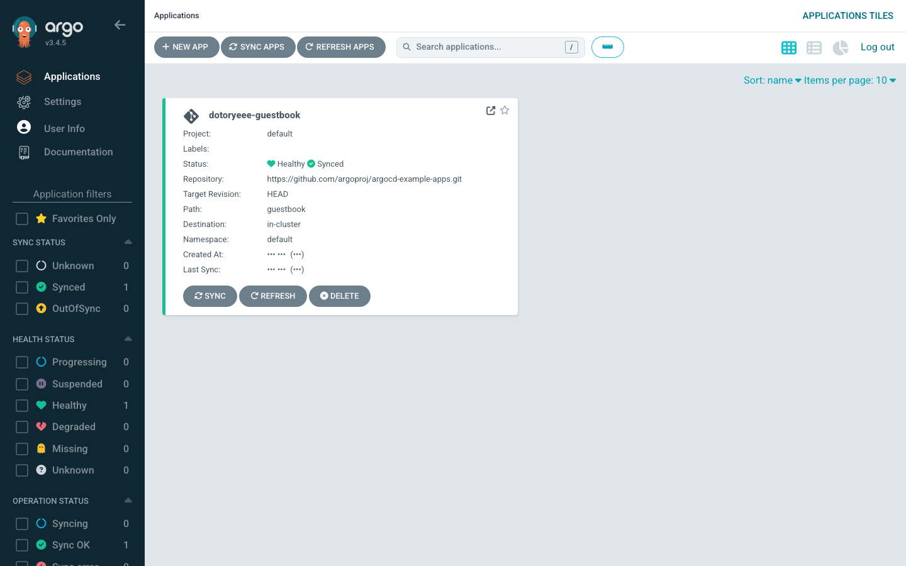
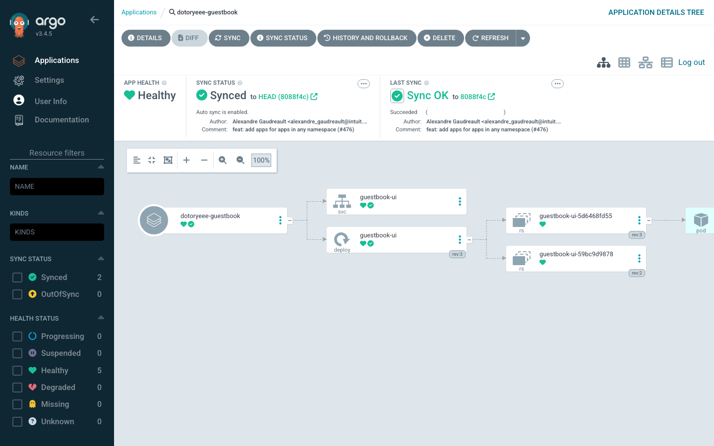
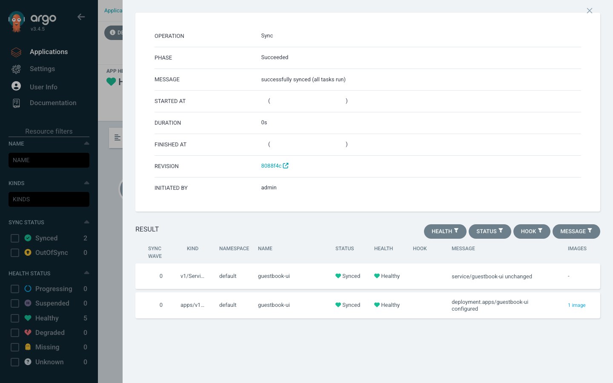

kind에 ArgoCD 올려 GitOps 동작 확인하기
목표
- GitOps와 ArgoCD 정리 글에서 개념과 아키텍처를 다뤘고, 여기서는 로컬 클러스터에 ArgoCD를 직접 올려 동작을 실측한다
- kind 클러스터에 공식 install.yaml로 ArgoCD를 설치하고, 공개 예제 저장소의 애플리케이션 하나를 sync한다
- kubectl로 라이브 리소스를 흔들어 drift를 만든 뒤, selfHeal이 이를 자동으로 되돌리는 과정을 초 단위로 확인한다
- 이전 리비전으로 롤백해 배포 이력이 어떻게 쌓이고 되감기는지 본다
실습 환경
도구는 모두 로컬 macOS에 설치했고, 클러스터는 kind가 띄운 단일 노드다. 버전은 다음과 같다.
kind version
kind v0.32.0 go1.26.3 darwin/arm64
argocd version --client --short
argocd: v3.4.5+564b949.dirty
ArgoCD CLI는 brew install argocd로 받았다. kind가 받아오는 노드 이미지는 kindest/node:v1.36.1이고, 클러스터 API 서버도 v1.36.1이다.
kind 클러스터와 ArgoCD 설치
클러스터부터 만든다. 이름에 dotoryeee를 넣어 기존 실습 컨테이너와 섞이지 않게 한다.
kind create cluster --name dotoryeee-gitops
✓ Preparing nodes 📦
✓ Starting control-plane 🕹️
✓ Installing CNI 🔌
✓ Installing StorageClass 💾
Set kubectl context to "kind-dotoryeee-gitops"
이어서 argocd 네임스페이스를 만들고 공식 install.yaml을 적용한다.
kubectl create namespace argocd
kubectl apply -n argocd -f https://raw.githubusercontent.com/argoproj/argo-cd/stable/manifests/install.yaml
그런데 마지막 CRD에서 막힌다.
The CustomResourceDefinition "applicationsets.argoproj.io" is invalid: metadata.annotations: Too long: may not be more than 262144 bytes
client-side apply는 원본 매니페스트를 last-applied-configuration 어노테이션에 통째로 넣는다. ApplicationSet CRD가 커서 이 어노테이션이 256KB 한도를 넘는다. server-side apply로 다시 적용하면 원본을 어노테이션에 담지 않으므로 통과한다.
kubectl apply --server-side --force-conflicts -n argocd -f https://raw.githubusercontent.com/argoproj/argo-cd/stable/manifests/install.yaml
Warning
💡 최신 kubectl로 install.yaml 적용시 ApplicationSet CRD가 어노테이션 한도를 넘으므로 server-side apply로 적용한다
파드 일곱 개가 다 뜨면 설치가 끝난다.
kubectl get pods -n argocd
NAME READY STATUS RESTARTS AGE
argocd-application-controller-0 1/1 Running 0 70s
argocd-applicationset-controller-7d4d7c7b89-gwpqv 1/1 Running 0 70s
argocd-dex-server-cbddb9676-2pk4c 1/1 Running 1 (32s ago) 70s
argocd-notifications-controller-7b55c64b69-kdm4p 1/1 Running 0 70s
argocd-redis-68bc658cfb-6js6z 1/1 Running 0 70s
argocd-repo-server-56c67cf674-p46tj 1/1 Running 0 70s
argocd-server-66b7d96445-kh9ff 1/1 Running 0 70s
로그인과 dotoryeee 계정 추가
UI와 CLI는 argocd-server로 붙는다. 로컬에서는 port-forward로 연다.
초기 admin 비밀번호는 설치 때 만들어진 시크릿에 들어 있다.
kubectl -n argocd get secret argocd-initial-admin-secret -o jsonpath='{.data.password}' | base64 -d
E70x8Oun8SKJoTkB
이 값으로 CLI에 로그인한다. 아래 명령의 비밀번호 자리는 위에서 뽑은 실제 값으로 넣는다.
argocd login localhost:8080 --username admin --password <admin-pw> --insecure
'admin:login' logged in successfully
Context 'localhost:8080' updated
admin 계정은 이름을 바꿀 수 없다. 대신 로컬 계정 dotoryeee를 하나 추가해 UI 로그인과 화면에 쓴다. argocd-cm에 계정을, argocd-rbac-cm에 권한을 넣고 argocd-server를 재시작해 설정을 읽힌다.
kubectl -n argocd patch configmap argocd-cm --type merge \
-p '{"data":{"accounts.dotoryeee":"apiKey,login"}}'
kubectl -n argocd patch configmap argocd-rbac-cm --type merge \
-p '{"data":{"policy.csv":"g, dotoryeee, role:admin\n"}}'
kubectl -n argocd rollout restart deployment argocd-server
계정 비밀번호를 정하면 로그인 준비가 끝난다.
argocd account update-password --account dotoryeee \
--current-password <admin-pw> --new-password <dotoryeee-pw>
Password updated
argocd account list
NAME ENABLED CAPABILITIES
admin true login
dotoryeee true apiKey, login
Application 생성과 sync
배포 대상은 ArgoCD 공식 예제 저장소의 guestbook이다. 저장소를 새로 만들지 않고 공개 repo를 그대로 desired state로 쓴다. Application 이름에도 dotoryeee를 넣는다.
argocd app create dotoryeee-guestbook \
--repo https://github.com/argoproj/argocd-example-apps.git \
--path guestbook \
--dest-server https://kubernetes.default.svc \
--dest-namespace default
application 'dotoryeee-guestbook' created
만들자마자 상태를 보면 아직 아무것도 배포되지 않아 OutOfSync에 Missing이다. desired state(Git)는 있고 live state(클러스터)는 비어 있는 상태다.
argocd app get dotoryeee-guestbook --refresh
Sync Status: OutOfSync from (8088f4c)
Health Status: Missing
GROUP KIND NAMESPACE NAME STATUS HEALTH HOOK MESSAGE
Service default guestbook-ui OutOfSync Missing
apps Deployment default guestbook-ui OutOfSync Missing
sync를 트리거하면 매니페스트가 클러스터에 적용된다. Deployment는 처음엔 Progressing이다가 파드가 뜨면 Healthy로 넘어간다.
argocd app sync dotoryeee-guestbook
Sync Status: Synced to (8088f4c)
Health Status: Progressing
GROUP KIND NAMESPACE NAME STATUS HEALTH HOOK MESSAGE
Service default guestbook-ui Synced Healthy service/guestbook-ui created
apps Deployment default guestbook-ui Synced Progressing deployment.apps/guestbook-ui created
argocd app wait로 Healthy까지 기다리면 두 리소스 모두 Synced에 Healthy가 된다.
argocd app wait dotoryeee-guestbook --health
Health Status: Healthy
GROUP KIND NAMESPACE NAME STATUS HEALTH HOOK MESSAGE
Service default guestbook-ui Synced Healthy service/guestbook-ui created
apps Deployment default guestbook-ui Synced Healthy deployment.apps/guestbook-ui created
UI에서도 같은 상태가 보인다. 애플리케이션 타일에 dotoryeee-guestbook이 Healthy와 Synced로 뜬다.

타일을 열면 리소스 트리가 나온다. Application 아래로 Service와 Deployment, 그 밑으로 ReplicaSet과 Pod까지 한 화면에 이어진다. 상단 패널에 sync 상태와 추적 중인 리비전(8088f4c)이 같이 뜬다. 아래 트리는 뒤에서 할 drift와 롤백까지 마친 실습 종료 시점이라 자동 sync가 켜져 있고 ReplicaSet이 여러 리비전으로 쌓여 있다.

drift와 self-heal
GitOps의 핵심은 클러스터를 직접 건드려도 Git 상태로 되돌아온다는 점이다. 이 동작을 직접 흔들어 확인한다.
-
kubectl로 라이브 Deployment의 replicas를 1에서 3으로 늘린다. Git에는 여전히 1로 적혀 있으니 이건 drift다
-
argocd app diff로 desired와 live 차이를 본다. 왼쪽(<)이 클러스터의 live 값(3), 오른쪽(>)이 Git의 desired 값(1)이다
-
Application 상태는 OutOfSync로 바뀐다. 하지만 sync 정책이 Manual이라 ArgoCD는 감지만 하고 되돌리지 않는다. 20초를 기다려도 replicas는 3 그대로다
-
이제 automated sync와 selfHeal을 켠다. selfHeal은 클러스터에서 직접 바뀐 리소스를 Git 상태로 되돌리는 스위치다
-
OutOfSync 상태에서 automated를 처음 켜는 순간의 초기 sync라 감지 즉시 replicas가 3에서 1로 돌아가고 상태도 Synced로 복구된다. kubectl로 손댄 변경이 곧바로 지워졌다. 이후 반복되는 self-heal 재조정은 기본 5초 주기로 돈다
selfHeal을 끈 3단계에서는 drift가 그대로 남았고, 켠 5단계에서는 손대는 즉시 되돌아왔다. 같은 kubectl scale인데 정책 한 줄로 결과가 갈린다. sync 상태 화면을 열면 sync 작업 결과가 남아 있다. Operation은 Sync, Phase는 Succeeded, 두 리소스 모두 Synced에 Healthy이고 리비전은 8088f4c다.

롤백
sync를 할 때마다 배포 이력이 쌓인다. 이력을 이용하면 이전 리비전으로 되감을 수 있다. 롤백은 automated sync가 켜져 있으면 곧바로 다시 덮어써지므로, 먼저 정책을 manual로 되돌린다.
예제 저장소에는 guestbook 이미지가 한 번 교체된 이력이 있다. 지금 HEAD(8088f4c)는 gb-frontend:v5를 쓰고, 그 이전 커밋(6865767)은 argocd-e2e-container:0.2를 쓴다. 이전 커밋을 targetRevision으로 지정해 sync하면 이미지가 옛날 것으로 내려간다.
argocd app set dotoryeee-guestbook --revision 68657670d9131dc5bc5f538b14c1de3377d74591
argocd app sync dotoryeee-guestbook --revision 68657670d9131dc5bc5f538b14c1de3377d74591
kubectl -n default get deploy guestbook-ui -o jsonpath='{.spec.template.spec.containers[0].image}'
quay.io/argoprojlabs/argocd-e2e-container:0.2
이 시점에 배포 이력은 두 개다. ID 0이 처음 sync한 8088f4c, ID 1이 방금 내린 옛 커밋이다.
argocd app history dotoryeee-guestbook
ID DATE REVISION
0 2026-07-20 22:53:25 +0900 KST (8088f4c)
1 2026-07-20 22:56:42 +0900 KST 68657670d9131dc5bc5f538b14c1de3377d74591 (6865767)
ID 0으로 롤백하면 이미지가 다시 gb-frontend:v5로 올라온다. 롤백도 하나의 배포로 기록되어 ID 2가 붙는다.
argocd app rollback dotoryeee-guestbook 0
kubectl -n default get deploy guestbook-ui -o jsonpath='{.spec.template.spec.containers[0].image}'
gcr.io/google-samples/gb-frontend:v5
argocd app history dotoryeee-guestbook
ID DATE REVISION
0 2026-07-20 22:53:25 +0900 KST (8088f4c)
1 2026-07-20 22:56:42 +0900 KST 68657670d9131dc5bc5f538b14c1de3377d74591 (6865767)
2 2026-07-20 22:56:55 +0900 KST (8088f4c)
롤백 직후엔 Application이 OutOfSync로 뜬다. rollback은 targetRevision을 옛 커밋(6865767)에 둔 채 특정 이력만 다시 배포하기 때문이다. targetRevision을 HEAD로 되돌리고 automated와 selfHeal을 다시 켜면 최종 상태가 Synced에 Healthy로 정리된다.
argocd app set dotoryeee-guestbook --revision HEAD --sync-policy automated --self-heal --auto-prune
Sync Policy: Automated (Prune)
Sync Status: Synced to HEAD (8088f4c)
Health Status: Healthy
정리
실습이 끝나면 클러스터를 통째로 지운다. kind delete cluster 한 번이면 노드 컨테이너와 네트워크까지 사라진다. 같은 Docker에서 돌던 다른 컨테이너는 건드리지 않는다.
kind delete cluster --name dotoryeee-gitops
Deleting cluster "dotoryeee-gitops" ...
Deleted nodes: ["dotoryeee-gitops-control-plane"]
kind get clusters
No kind clusters found.
결론
GitOps 네 원칙과 Argo CD 아키텍처, push·pull 차이 같은 개념은 GitOps와 ArgoCD 정리에서 다뤘다.
- kind와 install.yaml, argocd CLI 세 가지면 로컬에서 GitOps 루프를 통째로 돌려볼 수 있다
- OutOfSync는 desired와 live가 다르다는 신호일 뿐, 되돌릴지 말지는 selfHeal 정책이 정한다
- selfHeal을 켠 뒤 kubectl로 준 변경은 2초 만에 지워졌다. 클러스터를 직접 고치는 습관이 왜 GitOps와 안 맞는지 눈으로 보인다
- 배포 이력이 그대로 남아 이전 리비전으로의 롤백이 명령 한 줄로 끝난다
- drift 방어와 롤백을 클러스터가 스스로 하니, 사람이 손댈 지점은 Git 커밋으로 좁혀진다